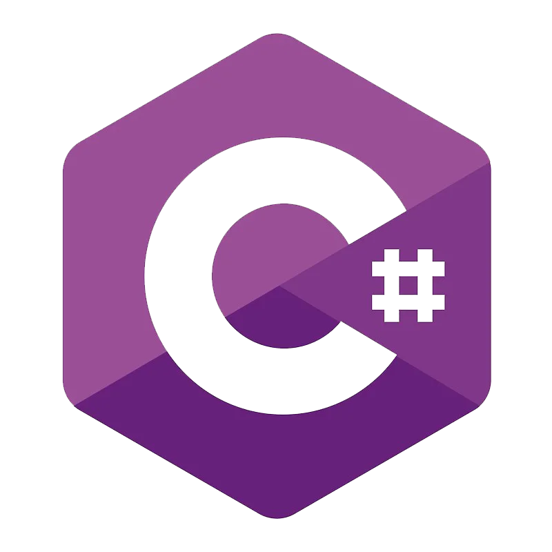

Linguagem de Programação é um método padronizado para expressar instruções para que um equipamento computacional realize uma ação. Permite que um programador especifique precisamente sobre quais dados um computador vai atuar, como estes dados serão armazenados ou transmitidos e quais ações devem ser tomadas sob várias circunstâncias. Alguns exemplos de linguagens:
Linguagens de Programação

Java

C#
R